Refrigeration Systems and Equipment
8
Learning Outcome
When you complete this learning material, you will be able to:
Explain the construction and operation of refrigeration systems.
Learning Objectives
You will specifically be able to complete the following tasks:
- 1. Describe the types of refrigerants.
- 2. Describe the principles and operation of vapour compression refrigeration systems.
- 3. Describe the principles and operation of absorption refrigeration systems.
- 4. Describe the principles and operation of multi-stage and cascade refrigeration systems.
- 5. Describe the principles, applications, and operation of heat pump and thermoelectric systems.
- 6. Describe the design of hermetic refrigeration systems.
- 7. Describe the design and operation of refrigeration compressors.
- 8. Describe the design and operation of evaporators, condensers, receivers, scale traps and dehydrators.
- 9. Describe the design and operation of absorbers.
- 10. Describe the design and operation of valves and fittings.
Objective 1
Describe the types of refrigerants.
THE IDEAL REFRIGERANT
The ideal refrigerant should possess the following properties:
- • Low boiling temperature at atmospheric pressure
- • High latent heat capacity
- • Moderate condensing temperature at a relatively low pressure
- • Low specific volume, at compressor suction pressure, to minimize the required compressor size
- • Stable chemical composition
- • Inoffensive odour that will not taint stored goods
- • Non-poisonous nature
- • Non-corrosive properties
- • Non-flammable and non-explosive nature when mixed with air
- • Low cost and readily available
The reason for having a low boiling point is to permit heat to be transferred at a sufficiently low temperature for cooling. A high latent heat capacity maximizes the amount of heat that can be transferred. It is also desirable that the compression energy expended on the gas to raise its temperature above that of the condenser cooling air or water should be moderate. The remaining points are self-explanatory. It is important to note that, as with steam, the temperature of evaporation from a liquid to a vapour varies with pressure and is always the same for the same pressure.
TYPES OF REFRIGERANTS
Some of the common refrigerants, in use today, are:
- • Refrigerant R-12
- • Refrigerant R-22
- • Refrigerant R-134a
- • Ammonia
- • Carbon dioxide
- • Sulphur dioxide
- • Ethyl chloride
Refrigerant R-12
Refrigerant R-12 ( \( \text{CCl}_2\text{F}_2 \) ) is a member of the CFC (chlorofluorocarbon) group of refrigerants and has been the most widely used of all of the refrigerants. It is a safe refrigerant in that it is nontoxic, nonflammable and nonexplosive. It is a highly stable compound that is difficult to break down even under adverse operating conditions. However, when brought into contact with an open flame or with an electrical heating element, it will decompose into highly toxic products, which cause harmful effects to humans in small concentrations and on short exposure.
As this refrigerant has a boiling point of \( -29.8^\circ\text{C} \) , at atmospheric pressure, it is a suitable refrigerant for use in high, medium and low temperature applications. R-12 is oil miscible, which is, the ability of the refrigerant to be dissolved in oil, under all operating conditions. This tends to increase the efficiency and capacity of the system in that the solvent action of the refrigerant maintains the evaporator and condenser tubes relatively free of oil films, which otherwise would tend to reduce the heat transfer capacity of these units.
This type of refrigerant is widely used in automotive air conditioning systems, home freezers and refrigerators, water fountains and transport refrigerators.
This refrigerant contains the chlorine molecule, which is the most destructive to the environment. This is due to the fact that they have an exceptionally long life in the atmosphere, that in some instances to be as much as 100 years, or more. They have been proven to cause depletion of the earth's stratospheric ozone layer and to contribute to the greenhouse effect (global warming). These are being replaced by other refrigerants, such as R-134a.
Refrigerant R-22
Refrigerant R-22 ( \( \text{CHClF}_2 \) ) is a member of the HCFC (hydro chlorofluorocarbon) group of refrigerants and has a boiling point, at atmospheric pressure, of \( -40.8^\circ\text{C} \) .
It was originally developed as a low temperature refrigerant and has been used in the past in domestic and farm freezers and commercial and industrial low temperature systems, down to temperatures as low as \( -87^\circ\text{C} \) .
Its primary use today is in packaged air conditioners, where, because of space limitations, the relatively small compressor displacement required is an advantage. Although R-22 is miscible with oil at temperatures found in the condensing section, it will often separate from the oil in the evaporator. The use of synthetic oils, with R-22, alleviates the problem of oil separation. HCFC compounds generally have fewer chlorine atoms and a much shorter atmospheric life than CFC's. However, since the HCFC's are not completely environmentally safe, they are scheduled for eventual phase-out.
Refrigerant R-134a
Refrigerant R-134a ( \( \text{CF}_3\text{CH}_2\text{F} \) ) is an HFC (hydroflourocarbon) and has zero ozone depletion potential. It is nonflammable and nonexplosive. This refrigerant has a boiling point, at atmospheric pressure, of \( -26.2^\circ\text{C} \) . Refrigerant R-134a has a miscibility problem with mineral oils, when used as a lubricant. This problem is eliminated through the use of ester-based synthetic lubricants.
HFC compounds contain no chlorine atoms and, therefore, have no ozone depleting potential. Most of these have a relatively short atmospheric life and a minimal greenhouse effect. R-134a is being used to replace R-12 in automotive air conditioning systems.
Ammonia
Refrigerant R-717 ( \( \text{NH}_3 \) ) is the only refrigerant outside of the fluorocarbon group that is being used to any great extent. Although ammonia is toxic and somewhat flammable and explosive under certain conditions, its excellent thermal properties makes it the most widely used refrigerant in the food industry. Dairies, meatpacking plants, cold storage warehouses, are all major users of ammonia refrigeration. Ammonia is an environmentally safe refrigerant.
This refrigerant has a boiling point, at atmospheric pressure, of \( -33.3^\circ\text{C} \) . Pure anhydrous ammonia is noncorrosive to all metals normally used in refrigeration systems. But, in the presence of moisture, ammonia becomes corrosive to nonferrous metals, such as copper and brass. Therefore, these metals should not be used in ammonia systems.
Ammonia is not miscible in oil, therefore, will not dilute the oil in the compressor crankcase. Provisions must be made for the removal of oil from the evaporator. Ammonia is readily available and the least expensive of the commonly used refrigerants.
Pure anhydrous ammonia (water free) has a sharp penetrating odour, is dangerous to life, explosive under certain conditions, and has a corrosive effect on some metals. On the other hand, the operating pressures are much lower than those required for carbon dioxide.
Carbon Dioxide
Carbon Dioxide (R-744) has similar properties to Freon 12 but requires extremely high head and suction pressures, \( -15^\circ\text{C} \) evaporator and \( 27^\circ\text{C} \) condenser temperatures require 2200 and 6550 kPa, respectively. Carbon dioxide is colourless and odourless. It is harmless to breathe except in very large quantities when it would prevent the lungs receiving a sufficient supply of oxygen. Carbon dioxide is non- flammable and does not support combustion. It has no corrosive effects on copper, copper alloys, or iron.
The boiling point of carbon dioxide is \( -78.5^\circ\text{C} \) . Carbon dioxide requires more power per ton (low coefficient of performance). It is a very stable gas. It does not decompose at the temperatures encountered in normal operation.
Sulphur Dioxide
Sulphur dioxide ( \( \text{SO}_2 \) ) has a boiling point of \( -10^\circ\text{C} \) at atmospheric pressure. It is colourless but has a pungent, suffocating odour. Sulphur dioxide is non-flammable and does not support combustion. It has no corrosive effects on copper, copper alloys, or iron, but will form sulphurous acid and attack iron, zinc, or copper if water is present.
The same smoke test that is used for locating ammonia leaks, consisting of a swab dipped in aqua ammonia, is used for leak detection. Sulphur dioxide is very stable at the temperatures found in normal operating conditions. It is very soluble in water. The displacement required is about 2.6 times that of an ammonia machine for the same amount of refrigeration effect.
Ethyl Chloride ( \( \text{C}_2\text{H}_5\text{CL} \) )
Ethyl chloride has a boiling point of \( 12.3^\circ\text{C} \) , at atmospheric pressure. It is colourless with a pungent smell and sweetish taste. It is inflammable when mixed with a certain proportion of air. Ethyl chloride has no corrosive effects on metals. Leaks are difficult to locate, especially on the low side, as pressure in the evaporating coils is below atmospheric. It is stable at the temperatures found in normal operating conditions. Ethyl chloride is slightly soluble in water but dissolves oils. Glycerine is used as a lubricant in some ethyl chloride systems. The displacement required is about 8.5 times that of an ammonia machine for the same amount of refrigeration effect.
Objective 2
Describe the principles and operation of vapour compression refrigeration systems.
VAPOUR COMPRESSION REFRIGERATION SYSTEM
The processes involved in vapour refrigeration are essentially the same as those used in generating steam from water. After the boiling point of the liquid is reached, more heat must be added to evaporate the liquid. This additional heat does work by changing the liquid into a vapour but does not cause any rise in temperature. For this reason, it is called latent or hidden heat.
If the boiling temperature of the refrigerant is sufficiently low, the latent heat required for evaporation of the liquid can be abstracted from the air of the rooms to be cooled and from the goods stored in these cold rooms.
The vapour formed by the removal of heat from its surroundings is still at a low temperature; that is, it contains a large quantity of heat but at a low temperature.
In order to dispose of this heat, it is necessary to raise its pressure so that it may flow into some cooling medium. This is normally accomplished by compressing the vapour to a pressure at which the corresponding saturation (or condensing) temperature is above that of the available cooling water. Another option is to absorb the refrigerant into another liquid, which is then compressed in the liquid phase, after which the absorbent is removed prior to cooling. This reduces the amount of work required for compression and increases the efficiency.
The second law of thermodynamics states that heat will not flow from a cold body to a hot body without the aid of mechanical work. The input work required to drive the compressor satisfies this law, and heat is induced to flow from the object (or surroundings) being cooled to the condenser cooling water and is then rejected to waste.
The cooling water removes the latent heat of evaporation from the gas, thus turning it back into a liquid at the compressor discharge pressure. In this condition, it can be piped back through regulating valves to be expanded again in the evaporators, continuing the original cycle. Control of the regulating valves produces a pressure drop so that the refrigerant cycle operates at a low pressure from regulating valve to compressor suction and at a high pressure from compressor discharge to regulating valve.
A closed-compression system consists of four essential parts:
- 1. A compressor
- 2. A condenser and receiver
- 3. An evaporator or cooling tank
- 4. Connecting pipes and a regulating valve
Fig. 1 shows a basic vapour compression cycle. Refrigerant in a liquid state is evaporated in the evaporator, thus producing the required cooling effect. The evaporated refrigerant is drawn into a compressor and raised to a high pressure again ready for re-expansion. Then, it condenses to a liquid in the condenser. From this point, it passes through a liquid receiver back to the regulating or refrigerant control to begin the cycle again.
![Figure 1: Vapour Compression Refrigeration System. The diagram is split into two parts. The left part is a schematic showing the refrigerant cycle with labels for 'Low-Pressure Low-Temperature Vapour', 'Low-Pressure, Low-Temperature Liquid-Vapour Mixture', 'High-Pressure, High-Temperature Liquid', 'High-Pressure High-Temperature Liquid-Vapour Mixture', 'High-Pressure High-Temperature Vapour', 'Vapour Compressor', 'Condenser', and 'Refrigerant Control'. The right part is a more detailed piping diagram showing the 'Evaporator' (1), 'Refrigerant Flow Control' (8), 'Liquid Line' (7), 'Receiver Tank Valve' (6), 'Receiver Tank' (6), 'Condenser' (4), 'Discharge Line', 'Discharge Service Valve' (2), 'Suction Service Valve', 'Suction Line' (3), and 'Compressor' (5).](d0abac95583b52a3b35f74a215567334_img.jpg)
Figure 1
Vapour Compression Refrigeration System
Fig. 2 shows an actual example using the refrigerant (Freon 12) with the relative pressures and temperatures at various points in the system.
![Diagram of a vapour compression system using Freon. The diagram shows a closed loop with four main components: a compressor (bottom), a condenser (right), an expansion valve (top right), and an evaporator (left). The refrigerant states are labeled as follows:
- At the evaporator outlet (top left): Liquid-Vapour Mixture at -1°C and 196 kPa.
- Inside the evaporator: Saturated Vapour at -1°C and 196 kPa.
- At the compressor inlet (bottom left): Superheated Vapour at 21°C and 196 kPa.
- At the compressor outlet (top right): Superheated Vapour at 55.5°C and 831.5 kPa.
- Inside the condenser: Saturated Vapour at 38.8°C and 831.5 kPa, and Subcooled Liquid at 30°C and 831.5 kPa.
- At the condenser outlet (bottom right): Liquid-Vapour Mixture at 38.8°C and 831.5 kPa.
- Inside the receiver tank (bottom right): Saturated Liquid at 38.8°C and 831.5 kPa.](ebff22fb5dd6f50a90e44dca0f82f285_img.jpg)
Figure 2
Example of Vapour Compression System Using Freon
Operation of the Vapour Compression System
Assuming that all the ammonia in the system is stored in the receiver in liquid form under pressure, when the regulating valve is opened slightly, it allows the liquid to pass into the evaporation coils at a reduced pressure.
This liquid ammonia is gradually changed into a gas (evaporated) by absorbing heat from the brine in the tank (if a brine circulating system is used) or from the air in the refrigerating room (if a direct expansion system is used). This process is exactly the same as that followed when water is evaporated into steam in a boiler by the absorption of heat from a furnace except that ammonia boils or evaporates at a much lower temperature and pressure than water.
The ammonia gas leaving the evaporator is drawn into a compressor and compressed back to the initial pressure. It is then condensed to a liquid in the condenser and returned to the receiver ready to flow through the regulating valve and repeat the cycle.
The compressor discharge and condenser pressures will range between 1030 and 1200 kPa and the evaporator and compressor suction pressures will be about 60 to 200 kPa.
The system is divided into two separate and distinct parts: one at low pressure, and one at high pressure.
Referring to Fig. 1, low pressure exists from the refrigerant flow control valve (8) through the evaporator (1) and suction line (2) to the compressor suction (3). The high-pressure section exists at the compressor discharge (4) through the condenser (5), receiver tank (6), and liquid line (7), to the refrigerant flow control valve (8).
The regulating valve regulates the flow of liquid refrigerant into the coils of the evaporator where it receives heat from the surroundings and is evaporated into a gaseous or vapour state. The heat absorbed by the refrigerant during this stage provides the refrigerating effect of the machine. The quantity of liquid flow allowed by the regulating valve depends upon the quantity of heat required to be absorbed.
The pressure drop through the regulating valve causes a small proportion of the liquid refrigerant to flash off into vapour because the reduced pressure carries with it a reduced saturation temperature and sensible heat. The economy of the plant depends to a great extent upon the temperature of the cooling water circulated through the condenser. If there is an ample supply, it is usually run to waste, but if the supply is restricted, it may be used over and over again by installing cooling towers or spray ponds.
Direct and Indirect Cooling Systems
Refrigeration systems use either direct or indirect cooling. With an indirect system of cooling, the evaporating coils are led through a tank containing a liquid such as brine (a strong solution of a salt in water with a low freezing point). The ammonia, in evaporating, extracts heat from and cools the brine. The brine is then pumped through the cold rooms and carries heat from these rooms back to the evaporator.
With direct cooling, the evaporating coils are placed directly in the rooms to be cooled. Liquid refrigerant is evaporated in them without the intervention of brine or any other carrying medium.
The advantages of the indirect system over the direct system are:
- • Indirect systems keep a more even temperature in the cooling rooms than direct systems.
- • There is not the same danger of spoiling foods in storage with a brine leak, as there would be with an ammonia leak in the direct system
- • The indirect system has a slightly lower operating cost for small or medium-size plants. The direct system has the advantage, in this respect, in very large plants.
The disadvantages of the indirect system over the direct system are:
- • The indirect cooling system requires the addition of a brine tank and brine circulating pump
- • There are two transfers of heat (from room to brine and from brine to ammonia), while there is only one transfer of heat (from the room to the ammonia) in the direct system
- • A larger quantity of refrigerant is required for charging the plant
- • A brine tank or brine pump is needed for the indirect system
- • More expansion valves are required since each bank of cooling coils must have its own regulating valve.
The condenser and compressor construction and operation are the same whether the cooling is carried out directly or indirectly.
Objective 3
Describe the principles and operation of absorption refrigeration systems.
AMMONIA ABSORPTION SYSTEMS
An elementary ammonia absorption refrigeration system is shown in Fig. 3. The condenser and evaporator perform the same functions as they did in the ammonia compression system, but the compressor is replaced by a generator or re-boiler in which the temperature and pressure of the ammonia is raised while it is absorbed or dissolved in water. There is also an additional piece of apparatus, called an absorber , and a pump for handling the mixture of water and ammonia (known as aqua).
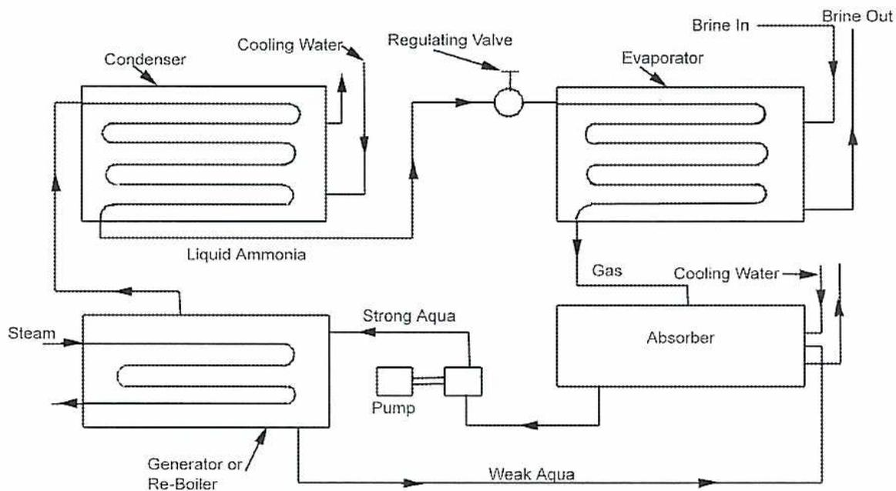
The diagram illustrates the basic absorption system. It consists of four main components: a Generator or Re-Boiler, a Condenser, an Evaporator, and an Absorber. The flow of the refrigerant (ammonia) and the absorbent (water) is as follows: In the Generator or Re-Boiler, steam is used to heat the 'Strong Aqua' mixture, causing ammonia gas to be driven off. This gas flows to the Condenser, where it is cooled by 'Cooling Water' and becomes 'Liquid Ammonia'. The liquid ammonia then passes through a 'Regulating Valve' into the Evaporator. In the Evaporator, the liquid ammonia absorbs heat from the space being cooled (indicated by 'Brine In' and 'Brine Out' lines) and becomes a gas. This gas is then absorbed by the 'Weak Aqua' in the Absorber. The Absorber is also cooled by 'Cooling Water'. The resulting 'Strong Aqua' mixture is then pumped back to the Generator by a 'Pump', completing the cycle.
Figure 3
Basic Absorption System
When the mixture of water and ammonia is heated in the generator, the pressure rises and the ammonia is driven off as a gas. This gas is condensed into a liquid and then passed through the expansion valve into an evaporator just as in the compression system. The gas produced in the evaporator is absorbed in water in the absorber. Then, it is pumped back to the generator, thus completing the cycle.
This pump is the only moving part of this system and is a considerably smaller piece of equipment than the compressor in the compression system.
The system shown in Fig. 3 is rather basic and would not give satisfactory service in actual operation.
Fig. 4 shows a more complete absorption refrigeration system with a number of additional parts that are used in commercial machines to secure higher efficiency and smoother operation.
![A detailed schematic diagram of an Ammonia Absorption System. The diagram shows a complex network of pipes and components. On the left, a 'Generator' is connected to a 'Steam Inlet' and a 'Condensate' outlet. It feeds into a 'Bubble Column' which has a 'Brine Inlet' and 'Brine Outlet'. Above the bubble column is an 'Ammonia Condenser' with 'Water Inlet' and 'Water Outlet'. This is followed by a 'Reflux' section and an 'Ammonia Receiver'. The main cooling loop includes an 'Evaporator' and an 'Exchanger'. On the right side, there are three 'Absorbers No. 1, 2 & 3' with their own 'Water Outlet'. A 'Strong Aqua Tank' is connected to the absorbers, and an 'Aqua Pump' is shown at the bottom right. A legend at the bottom left identifies the different pipe types: 'Anhydrous Ammonia Liquid' (solid line), 'Anhydrous Ammonia Gas' (dashed line), 'Strong Aqua' (dotted line), 'Weak Aqua' (dash-dot line), 'Vapour Ammonia Vapour' (long dash-short dash line), 'Cooling Water' (thin solid line), 'Brine' (thick solid line), and 'Steam' (thick dashed line).](27b06ec9f42b5d727a2630f61a5f1861_img.jpg)
Figure 4
Ammonia Absorption System
Operation of Absorption Systems
Operation of the ammonia absorption system of refrigeration depends upon:
- ▪ The affinity of water and ammonia for each other
- ▪ The process of fractional distillation whereby the application of heat to a mixture of water and ammonia (aqua ammonia) drives off the ammonia as a gas leaving the water behind
Ammonia evaporates at a much lower temperature than water. Therefore, there is no danger of the water being evaporated if low-pressure or exhaust steam is used as the heating medium. Water has the capacity for dissolving from 500 to 1200 times its own volume of ammonia gas. The quantity depends upon temperature and pressure. Increasing pressure or decreasing temperature simply increases the quantity of ammonia gas that the water can absorb. There is a definite maximum quantity for each combination of pressure and temperature which cannot be exceeded.
The aqua ammonia, or mixture of water and ammonia in its various stages, is termed strong aqua or weak aqua according to the quantity of ammonia that it contains. The legend included with Fig. 4 shows these stages of the mixture.
Cycle of Operation
Starting at the generator, the solution of water and ammonia is heated by means of low-pressure or exhaust steam coils to a temperature and pressure that will free the ammonia from the water as a vapour or gas. Some water vapour is also formed, and this mixture of gas and water vapour passes upward from the generator to the rectifier or bubble column.
Here, the ascending ammonia gas and water vapour come in contact with strong aqua pumped from the absorber. The strong aqua absorbs heat from the hot gas and also separates some of the water vapour from the hot ammonia gas and carries it back to the generator.
The ammonia gas, still containing some water vapour, continues up the bubble column until it meets reflux liquid ammonia from the condenser flowing in a counter current direction. Enough liquid is passed through the reflux control to take up sufficient heat from the hot ammonia gas and water vapour to condense the water vapour. This condensate collects in the bottom of the rectifier column and flows back to the generator.
The ammonia gas leaves the top of the bubble column, passes to the condenser where it is condensed, and then gathers as liquid ammonia in the receiver. From the receiver, it passes through the regulating valve into the evaporator and evaporates into a gas by absorbing heat from the brine.
From the evaporator, the ammonia gas passes into the absorber where it is again absorbed in water, forming the strong aqua. This strong aqua is then forced by the pump through the exchanger into the generator, thereby completing the cycle.
As the strong aqua is being continuously pumped from the absorber to the generator, it is necessary to have the weak aqua also passing continuously from the generator to the absorber by way of the exchanger or weak liquid cooler. The exchanger is a double-pipe arrangement, one pipe within the other; the hot weak aqua flows to the weak aqua cooler in one direction, and the cool strong aqua from the rectifier flows in the opposite direction.
An exchange of heat is made by water circulating through pipes. This raises the temperature of the strong aqua before it enters the generator and reduces the temperature of the weak aqua before it enters the weak aqua cooler and passes to the absorber.
Objective 4
Describe the principles and operation of multi-stage and cascade refrigeration systems.
MULTI-STAGE SYSTEMS
When unusually low temperatures are required in an evaporator, correspondingly low pressures must be obtained. The ratio of compression between evaporator and condenser pressures may be too great for a single-stage compressor to handle without incurring dangerously high discharge temperatures. To prevent this, two or more compression stages are employed. The refrigerant vapour is cooled in an intercooler between the succeeding stages of compression. When the work of compression is accomplished in this manner, the compression ratio in each stage and the resulting temperature rise are moderate. The total power required is less than that needed to achieve the same refrigeration effect with a single-stage unit.
Multi-stage plants have various arrangements depending upon the nature of refrigeration required. Quite apart from their application in low-temperature plants, they may also be employed where refrigeration at two or more different temperatures is desired from one plant. However, to achieve this end, multi-stage plants are not essential. Two or more evaporators can be operated at different temperatures from a single-stage plant by using pressure regulating valves and operating the compressor at the lowest suction pressure.
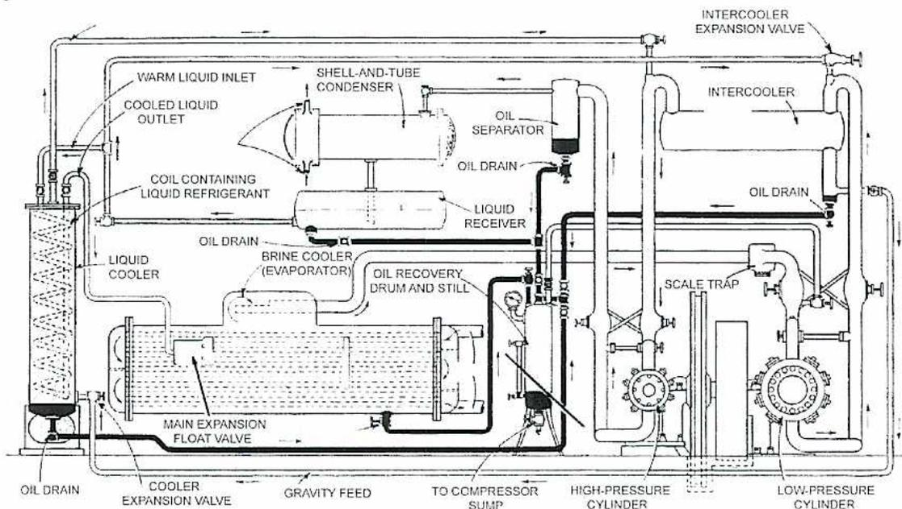
The diagram illustrates a two-stage refrigeration system. On the right, a 'LOW-PRESSURE CYLINDER' and a 'HIGH-PRESSURE CYLINDER' are part of a 'Duplex Compressor' unit. The low-pressure cylinder draws refrigerant from an 'EVAPORATOR' (labeled 'BRINE COOLER (EVAPORATOR)') through a 'MAIN EXPANSION FLOAT VALVE'. The evaporator is connected to a 'COOLER' and has an 'OIL DRAIN'. The discharge from the low-pressure cylinder goes to an 'INTERCOOLER', where it is cooled by 'WARM LIQUID INLET' and 'COOLED LIQUID OUTLET' lines. An 'INTERCOOLER EXPANSION VALVE' is located on the line between the intercooler and the high-pressure cylinder. The high-pressure cylinder draws refrigerant from the intercooler and discharges it into a 'SHELL-AND-TUBE CONDENSER'. The condenser has a 'LIQUID RECEIVER', 'OIL SEPARATOR', and 'OIL DRAIN'. The refrigerant from the liquid receiver passes through a 'COIL CONTAINING LIQUID REFRIGERANT' and then through a 'COOLER EXPANSION VALVE' to return to the evaporator. Other components shown include an 'OIL RECOVERY DRUM AND STILL', 'SCALE TRAP', and 'TO COMPRESSOR SUMP' line.
Figure 5
Two-Stage Plant with Duplex Compressor
In the refrigeration plant shown in Fig. 5, compression of refrigerant vapour is accomplished in the two cylinders of a single machine; one serving as the low-pressure stage, and the other as the high-pressure stage. Intercooling between stages is performed by vaporization of liquid refrigerant in the intercooler, which is merely a tank. Excess liquid refrigerant from the intercooler is piped by gravity to the liquid cooler, which is connected to the suction of the high-pressure stage.
In this cooler, the refrigerant vaporizes and cools the main body of the liquid going to the evaporator. This is called a brine cooler because it chills brine to be used elsewhere in the plant. The drains from separators, traps, and coils are piped to a central oil-recovery drum and still. A connection to the low-pressure suction permits boiling off any liquid ammonia that drains into this receiver with the oil.
Since low-suction pressure is required for low refrigeration temperature, vapour coming from the evaporator has a very large specific volume. To handle the large volumes, multi-stage plants may employ a rotary compressor for the first or low-pressure stage as shown in Fig. 6. This machine operates at high speed, and a relatively small unit will handle a large amount of rarefied vapour. Such a compressor has a good efficiency at the low to moderate first-stage pressures. This compressor is known as a booster compressor.
![Schematic diagram of a two-stage refrigeration plant with a rotary booster compressor. The diagram is divided into two rooms: a Low-Temperature Room on the left and a High-Temperature Room on the right. In the Low-Temperature Room, a 'First-Stage Rotary Booster Compressor' is connected to an 'Oil Separator' and an 'Oil Drain'. The compressor is connected to an 'Intercooler' which has a 'Water' inlet and an 'Oil Trap'. The intercooler is connected to a 'Liquid and Gas Cooler' which has an 'Oil Drain Line'. The 'Liquid and Gas Cooler' is connected to 'Main Expansion Valves'. In the High-Temperature Room, the 'Main Expansion Valves' lead to a 'Cooler Expansion Valve' which is connected to a 'Shell-and-Tube Condenser'. The condenser has a 'Cooling Water' inlet and an 'Oil Drain'. The condenser is connected to an 'Oil Separator' which is connected to a 'Liquid Receiver' with a 'Sight Glass'. The 'Liquid Receiver' is connected to a 'Second-Stage Reciprocating Main Compressor' which has an 'Oil Drain'. The 'Second-Stage Reciprocating Main Compressor' is connected to the 'Main Expansion Valves'.](1a827b10290f33d4fec04d0e8ef7a897_img.jpg)
Figure 6
Two-Stage Plant with Rotary Booster Compressor
This plant has two cold rooms, each maintained at a different temperature. Suction of the booster machine is taken from the low-temperature evaporator, while that of the reciprocating machine is connected to the booster discharge and the high-temperature evaporator. This plant also has a simple liquid and gas cooler in which the chilling effect is supplied by the vaporization of liquid refrigerant bypassed from the main liquid line.
When low evaporator temperatures are required, three or more stages of compression are used. The compression may be achieved by three individual reciprocating compressors as shown in Fig. 7, or by a rotary booster unit used for the first stage.
![Schematic diagram of a three-stage refrigeration system. The diagram shows a complex piping layout with three compressors: Low-Pressure, Intermediate Pressure, and High-Pressure. The Low-Pressure compressor is connected to a flooded coil evaporator and an accumulator. The Intermediate Pressure compressor is connected to the Low-Pressure compressor and a liquid and gas cooler. The High-Pressure compressor is connected to the Intermediate Pressure compressor and an oil separator. The oil separator is connected to a shell-and-tube condenser, which is cooled by water. The condenser is connected to a liquid receiver, which has a sight glass and an oil drain. The liquid receiver is connected to a liquid and gas cooler, which is connected to the Low-Pressure compressor. The diagram also includes various components like a float-operated regulator, oil drains, and a scale trap.](2cde062fd82833415971a8bd1a2cafab_img.jpg)
Figure 7
Three-stage Refrigeration System
Features characteristic of a modern low-temperature plant are included in this layout. A liquid and gas cooler, for removing superheat and entrained lubricating oil, is placed in the vapour line between successive stages. Liquid refrigerant is cooled considerably below condenser temperature as it passes successively through the colder liquid and gas coolers on its way to the main expansion valve.
The simple evaporator shown in Fig. 6 has been replaced by a flooded evaporator. The condenser employed is the shell-and-tube type. Plants constructed as shown can provide very low temperatures with minimum power consumption.
Cascade Refrigeration Systems
Another means of producing very low temperatures is the cascade system where two refrigerants are used with two separate cooling loops. As shown in Fig. 8, the low-temperature stage is the one that provides the intended cooling. The condenser of the low-temperature stage is connected to the evaporator of the high-temperature stage.
The refrigerant used for the low-temperature stage can be chosen to operate at high pressure and low temperature, while the refrigerant for the high temperature stage can be a normal refrigerant.
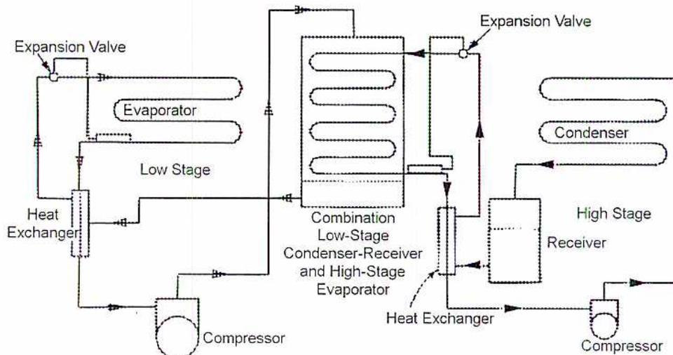
The diagram illustrates a two-stage cascade refrigeration system. It consists of two separate refrigeration loops. The 'Low Stage' loop on the left includes an 'Evaporator' (the cooling unit), an 'Expansion Valve', a 'Heat Exchanger', and a 'Compressor'. The 'High Stage' loop on the right includes a 'Condenser', a 'Receiver', a 'Compressor', and a 'Heat Exchanger'. The two loops are coupled by a central 'Combination Low-Stage Condenser-Receiver and High-Stage Evaporator'. This central unit acts as the condenser for the low stage and the evaporator for the high stage. Arrows indicate the flow of refrigerant within each loop and the heat transfer between the two stages.
Figure 8
Two-Stage Cascade System
(Courtesy of ASHRAE Handbook)
For the cascade system to operate properly there must be an overlap between the condenser temperature of the low stage and the evaporator temperature of the high stage. This needs to be somewhat lower, around 5-10°C, to permit adequate heat transfer.
Objective 5
Describe the principles, applications, and operation of heat pump and thermoelectric systems.
HEAT PUMPS
Heat pumps operate on the same cycle as refrigeration except that their purpose is to provide heat instead of cooling. One application is residential heating where the low temperature reservoir is either outside air or pipes buried in the soil. A refrigerator can be considered to be a heat pump since it rejects heat to the room in which it is located although its primary purpose is to cool food. A commercial application is truck refrigeration which combines cooling, heating, and defrosting.
Operation of Heat Pump Systems
Fig. 9 (a) is the cooling cycle of a heat pump system while Fig. 9 (b) shows the heating cycle. The reversing valve is the main component that allows dual operation. This valve permits the discharge of the pump to be routed either to the outside coil or to the inside coil. For cooling, the refrigerant goes to the outside coil to be condensed, and then it is passed to the inside coil or evaporator to provide cooling. When the reversing valve is in the heating position, the compressed, hot refrigerant flows to the inside coil which is now acting as a heater.
A metering device or valve controls the amount of cooling or heating by regulating the flow. When one valve is controlling, the other one is closed. Check valves ensure that no back-flow occurs.
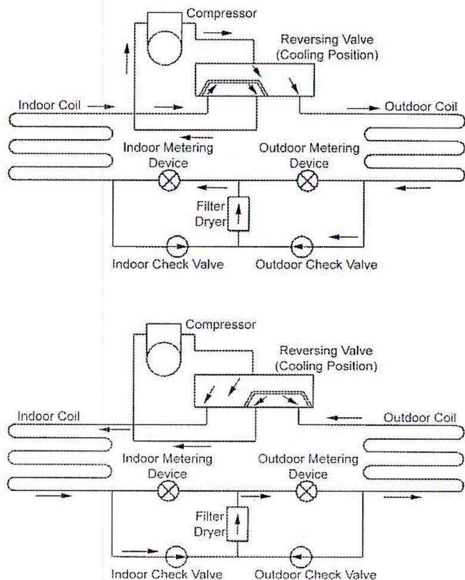
The diagram consists of two parts, each showing a different operating mode of an air-to-air heat pump system. Both diagrams include the following components: a Compressor, a Reversing Valve (labeled 'Cooling Position'), an Indoor Coil, an Outdoor Coil, an Indoor Metering Device, an Outdoor Metering Device, a Filter Dryer, an Indoor Check Valve, and an Outdoor Check Valve. Arrows indicate the flow of refrigerant and air.
In the top diagram (Cooling Mode): The Compressor is on the left. Refrigerant flows from the Compressor to the Reversing Valve, then to the Outdoor Coil on the right. From the Outdoor Coil, it passes through the Outdoor Metering Device and the Outdoor Check Valve. It then flows through the Filter Dryer and the Indoor Check Valve to the Indoor Metering Device, and finally to the Indoor Coil on the left. Air is shown entering the Indoor Coil from the left and exiting to the right, and entering the Outdoor Coil from the right and exiting to the left.
In the bottom diagram (Heating Mode): The Compressor is on the left. Refrigerant flows from the Compressor to the Reversing Valve, then to the Indoor Coil on the left. From the Indoor Coil, it passes through the Indoor Metering Device and the Indoor Check Valve. It then flows through the Filter Dryer and the Outdoor Check Valve to the Outdoor Metering Device, and finally to the Outdoor Coil on the right. Air is shown entering the Outdoor Coil from the right and exiting to the left, and entering the Indoor Coil from the left and exiting to the right.
Figure 9
Air-to-air Heat Pump System
(Courtesy of ASHRAE Handbook)
Thermoelectric Systems
Referring to Fig. 10, a current is applied to two semiconductors. One of them is an "N" type semiconductor which has more electrons than necessary. The other is a "P" type semiconductor that has a shortage of electrons.
The movement of electrons from the "N" type to the "P" type causes a cooling effect on one surface as a constant heat transfer takes place. The two semiconductor materials are the same as those used in a thermocouple, and the device can be thought of as a thermocouple in reverse.
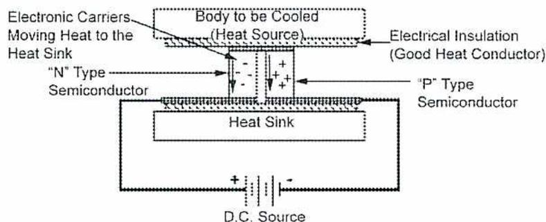
This diagram illustrates the basic principle of thermoelectric cooling. A "Body to be Cooled (Heat Source)" is shown at the top, separated from a "Heat Sink" by a layer of "Electrical Insulation (Good Heat Conductor)". Between the heat source and the insulation, there is a junction of "N" Type and "P" Type Semiconductors. Arrows indicate "Electronic Carriers Moving Heat to the Heat Sink". The semiconductors are connected in a series circuit to a "D.C. Source" at the bottom, which has positive (+) and negative (-) terminals.
Figure 10
Diagram of Thermoelectric Cooling
The semiconductors form a couple and are connected in series electrically and in parallel thermally through the use of multiple couples. Fig. 11 illustrates a typical sandwich arrangement showing the multiple modules.
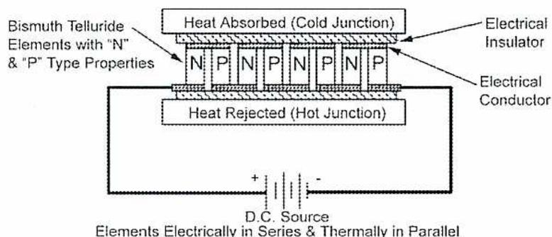
This diagram shows a "Typical Thermoelectric Module" in a sandwich arrangement. It consists of multiple "Bismuth Telluride Elements with 'N' & 'P' Type Properties" arranged in alternating columns labeled N, P, N, P, N, P, N, P. These elements are connected between two horizontal plates: "Heat Absorbed (Cold Junction)" at the top and "Heat Rejected (Hot Junction)" at the bottom. The entire assembly is sandwiched between an "Electrical Insulator" on top and an "Electrical Conductor" on the bottom. The elements are "Electrically in Series & Thermally in Parallel" and are connected to a "D.C. Source" with positive (+) and negative (-) terminals.
Figure 11
Typical Thermoelectric Module
Application of Thermoelectric Cooling
The application of thermoelectric cooling is limited to small cooling requirements although temperature differences of up to 70°C can be reached. The advantages of this system include:
- • Simplicity
- • Lack of a refrigerant
- • High reliability
- • No moving parts
- • Space and weight savings
- • Precise temperature control
This system is used in small cooling applications, such as electronics, where a regular refrigeration system is not suitable. Applications exist for a wide range of micro-electronic devices, including military, medical, and scientific instruments. It is also being applied to various food refrigeration requirements, such as portable picnic coolers and water coolers.
Objective 6
Describe the design of hermetic refrigeration systems.
HERMETIC SYSTEMS
Since refrigerant leakage is an undesirable consequence of refrigeration systems, efforts have been made to encapsulate components into sealed containers, and thus produce what are referred to as hermetic systems. Hermetic systems can be completely assembled by the manufacturer and then shipped as a single unit. This reduces the time and cost of installing a system and enables better quality control.
Hermetic design is most often applied to small compressors used for domestic refrigerators, small air conditioners, and other small to medium size refrigeration units. The motor and compressor are contained in a sealed unit that can be welded to other components and piping. Both the compressor and motor are in contact with the refrigerant, but no shaft seals are required. Since ammonia attacks the copper windings of the motor, refrigerants are generally limited to the halocarbon types.
Some compressors are semi-hermetic with covers that allow access to pistons and cylinders for servicing and maintenance. Large compressors are normally of the open type.
Hermetic Design of Absorption System
Fig. 12 shows a diagram of an absorption machine built on the hermetic principle. All absorption units have purge systems to eliminate non-condensable gases, but they are not designed to overcome system leakages. The logical solution is to prevent leakage by designing the equipment with as few connections as possible, that is, by enclosing the whole unit in a single shell. The figure shows the condenser, evaporator, absorber, and generator all enclosed in one shell. The pumps are built without external seals, similar to a deep-well submersible pump, and can also be said to be hermetic.
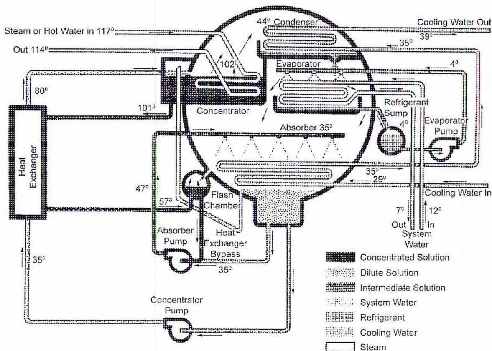
The diagram illustrates a hermetic absorption system with the following components and flow details:
- Heat Exchanger: Located on the left, it receives steam or hot water at 117° and exits at 114°. It also receives a solution at 80° and exits at 35°.
- Concentrator: The central component, containing a flash chamber. It receives steam or hot water at 101° and exits at 102°. It contains an absorber at 35°.
- Condenser: Located at the top right, it receives refrigerant at 44° and exits at 39°. It is cooled by cooling water.
- Evaporator: Located at the bottom right, it receives refrigerant at 4° and exits at 35°. It is cooled by cooling water.
- Absorber: Located within the concentrator, it receives refrigerant at 35° and exits at 29°.
- Refrigerant Sump: Located between the condenser and evaporator, containing an evaporator pump.
- Absorber Pump: Located at the bottom of the concentrator.
- Concentrator Pump: Located at the bottom left of the concentrator.
- System Water: Enters the system at 12° and exits at 7°.
- Cooling Water: Enters the condenser and evaporator at 35° and exits at 39°.
Legend:
- Concentrated Solution (dark hatched pattern)
- Dilute Solution (light hatched pattern)
- Intermediate Solution (medium hatched pattern)
- System Water (dotted pattern)
- Refrigerant (cross-hatched pattern)
- Cooling Water (horizontal line pattern)
- Steam (white/unfilled)
Figure 12
Hermetic Absorption System
Hermetic Design of a Centrifugal Machine
The principle of hermetically sealing equipment to simplify operation at sub-atmospheric pressures has also been applied to compression systems operating with chilled water. Fig. 13 shows a sectional view through a centrifugal machine applied to air-conditioning work.
![A detailed cutaway diagram of a hermetic centrifugal compression system. The diagram shows various components labeled with numbers 1 through 9. On the left, there's a condenser (1) with a tube bundle (5) and a marine-type water box (3). In the center, a single-stage compressor (2) is connected to a motor (8). Below the compressor is an evaporator (4) with its own tube bundle (5) and a float valve (6). A purge system (9) is shown at the top. The entire unit is supported by a base and includes a lubrication system (7).](ae02603e9e4b46477222bf72c1c7c7f6_img.jpg)
-
1. Condenser 4. Evaporator 7. Lubrication System 2. Single-Stage Compressor 5. Tube Bundle 8. Motor 3. Marine-Type Water Boxes 6. Float Valve 9. Purge System
Figure 13
Hermetic Centrifugal Compression System
Objective 7
Describe the design and operation of refrigeration compressors.
REFRIGERATION COMPRESSORS
The compressor is one of the major components of a refrigeration system. Its capabilities and limitations directly influence the design of the system. The major types of compressors are:
- • Reciprocating
- • Centrifugal
- • Screw compressors
Reciprocating Compressors
Reciprocating compressors have been the most common type used in refrigeration applications because of their ability to provide a high compression ratio. They are being replaced by the increased use of screw compressors that are less expensive to maintain.
Reciprocating compressors may be:
- • Vertical or horizontal
- • Single or double-acting
- • Simple or compound
- • Driven by a reciprocating engine or by an electric motor
Single-acting compressors are the vertical type and double-acting compressors are the horizontal type. Each type has its own advantages.
A double-acting compressor has approximately twice the capacity of a single-acting compressor having the same cylinder diameter and stroke length. The double-acting compressor is more easily accessed for operating, overhauling, and repair, but the single-acting machine takes up less floor space. When very low temperatures are desired, the compressor is sometimes made compound, or two-stage in which the gas passes through an intercooler between the stages.
Compressor cylinders are usually made of a good grade of cast iron and have a water jacket to ensure efficient cylinder lubrication and reduce the heat of compression. Freon 12 compressors do not normally have a water jacket due to the high heat-removing capacity of the dense gases.
Clearances are kept to a minimum in compressor cylinders. If clearances were large, a certain volume of gas would be left in the cylinder at the end of each stroke. This gas would have to be re-expanded behind the retreating piston down to the suction pressure before more gas could be admitted. This would reduce the capacity of the machine. It is also important that the valve area be large so that the gas may have free and unrestricted entry and exit. Valves must be light weight to reduce inertia.
Vertical single-acting two-cylinder compressors (Fig. 14) are available in a wide range of sizes suitable for ammonia, Freon and CO 2 . They usually run at medium speeds and, due to long bearing surfaces, provide long life and infrequent servicing.
Valves in older slow-speed compressors are usually poppet type valves. Valves in high-speed compressors are usually plate or ribbon valves. Poppet valves however, have given way to light weight quick-acting types such as the Worthington Feather Valve shown in Fig. 14.
![A detailed cross-sectional diagram of a single-acting reciprocating compressor. The diagram shows the internal mechanical structure including the crankshaft, connecting rod, piston, and valve assembly. Various components are labeled with leader lines pointing to their locations within the machine. The labels include: 'Wrist Pin Drive-Fit in Piston... Eliminates Oil Leakage to Suction' at the top of the piston; 'Safety Head with Ground Joint... Reduces Stop-Over Hazard' on the left side of the cylinder head; 'Connecting Rod Drop-Forged Steel, I-Section' connecting the piston to the crankshaft; 'Double-Row Roller Bearings' at the base of the connecting rod; 'Sight Glass Back of Crank Case' on the lower left; 'Crankshaft, Drop-Forged Steel' at the bottom center; 'Splash-Flood Lubrication' indicated in the crankcase; 'Worthington Feather Valves on Suction and Discharge' at the top of the cylinder; 'Suction Port' on the right side of the cylinder; 'Liberal Water Jackets Cover Hot Portion of Compressor Cylinder' surrounding the cylinder; and 'Long Piston Serves as a Cross-Head' on the far right, with a 'Rotary Shaft Seal Lapped Faces' at its base.](4aa9c7965776f4f4b8eba638b2c53369_img.jpg)
Figure 14
Single-Acting Reciprocating Compressor
This valve and the light-weight circular plate valve, shown in Fig. 15(a), are designed for the lowest possible inertia, long life, and ease of replacement of parts. No regrinding or adjustment is required.
The plate valve, shown in detail in Fig. 15(b), consists of a thin, flexible steel plate. On top of the valve is a stop plate which limits the opening movement. Helical springs contained in the stop plate close the valve at the end of its stroke.
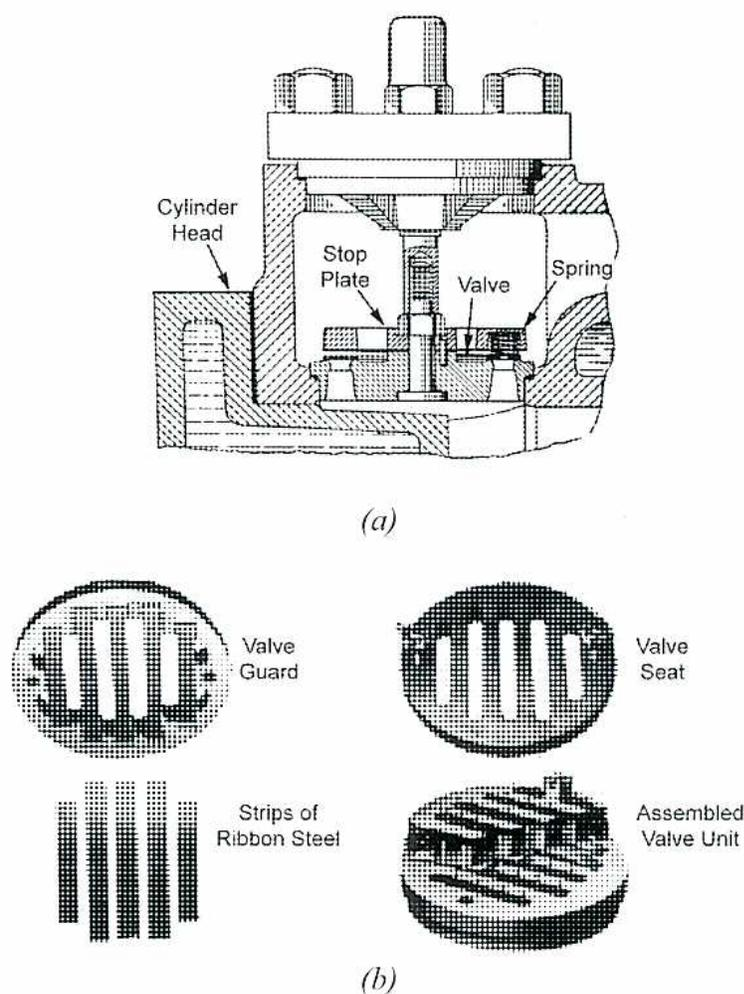
Figure 15 consists of two parts, (a) and (b). Part (a) is a cross-sectional diagram of a valve assembly within a cylinder head. It shows the cylinder head, a stop plate, a valve, and a spring. Part (b) is an exploded view of the valve components, showing the valve guard, valve seat, strips of ribbon steel, and the assembled valve unit.
(a)
Cylinder Head
Stop Plate
Valve
Spring
(b)
Valve Guard
Valve Seat
Strips of Ribbon Steel
Assembled Valve Unit
Figure 15
Details of Plate Valve
Each valve is mounted as a single unit, and the entire valve assembly can be removed by taking off the valve cover on the outside of the cylinder. The large port openings, low lift, and low mass make it very efficient at high speeds.
The trend is towards smaller high-speed machines, making use of cylinders in pairs arranged as V-4, V-6, and up to V-12. Utilizing large bore, short stroke (low piston speed), and high rev/min, they can be built in sizes up to several hundreds of tonnes as very compact units. Construction is similar to that shown in Fig. 14, using a two-throw
crankshaft, but low mass automotive pistons are used. The suction valve is situated in the head instead of the piston.
Fig. 16 shows a cut-away view of a Carrier V-6 high-speed ammonia compressor. Note the compact, rigid assembly. Forced feed lubrication is used, and the cylinder is fitted with replaceable liners.
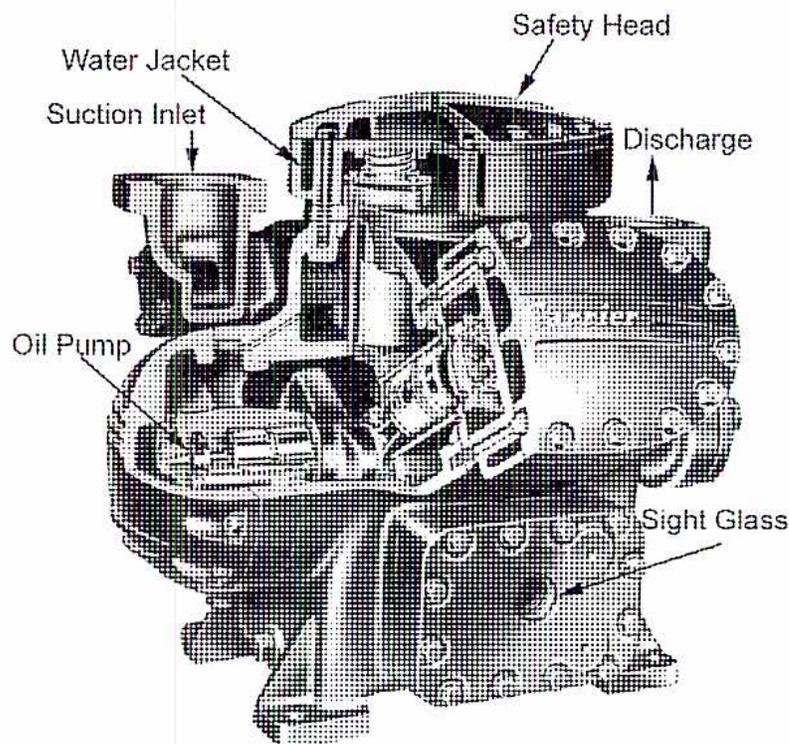
A detailed cut-away technical illustration of a Carrier V-6 high-speed ammonia compressor. The diagram shows the internal mechanical structure, including the crankshaft, pistons, and valve assembly. External components are labeled with arrows pointing to their locations: 'Water Jacket' (surrounding the cylinder block), 'Suction Inlet' (on the left side), 'Oil Pump' (at the bottom left), 'Safety Head' (on top), 'Discharge' (on the right side), and 'Sight Glass' (on the lower right side of the casing).
Figure 16
Single-Acting Reciprocating Compressor
Centrifugal Compressors
Centrifugal compressors are used for higher capacity applications, particularly in large process plants. The most common drivers for large centrifugal compressors are:
- • Electric motors
- • Steam turbines
- • Gas turbines
Since the compression ratio of a single impeller is limited to about 1.5 to 2, they are often multi-staged using as many as 6 or more impellers to achieve the required compression ratio. An example of a two-stage centrifugal compressor is shown in Fig. 17.
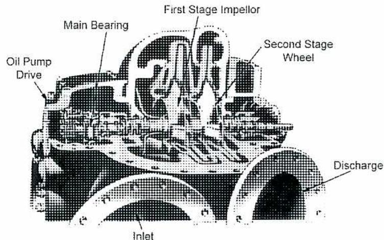
Figure 17
Centrifugal Compressor
The refrigerant enters into the intake volute and is guided into the centre of the impeller. Guide vanes are sometimes installed just before the impeller to control the intake angle by providing pre-whirl to the flow in order to match the angle of the impeller vanes. The impeller mainly imparts kinetic energy and increases the velocity of the fluid. However, some pressure rise does occur in the impeller. This is converted into increased pressure in the diffuser section after the exit from the impeller. The flow is then guided into the next stage and finally discharged.
Screw Compressors
Screw compressors, also known as helical rotary compressors, have become more common in the past few decades and have at least partially replaced reciprocating compressors in many refrigeration applications. With improvements in their design, they are able to meet high compression requirements with flexible capacity control.
A twin-screw design is the most common arrangement. It consists of two rotational elements, or rotors, that mesh together and provide a decreasing area from one end of the rotor to the other. This action produces a corresponding pressure increase. One rotor has four convex lobes that mesh with six concave lobes on the other rotor. Other combinations, such as 3/5 and 5/7, are also sometimes used. The rotors are located in a pressurized housing. Fig. 18 illustrates this design by showing the cross-sectional profile.
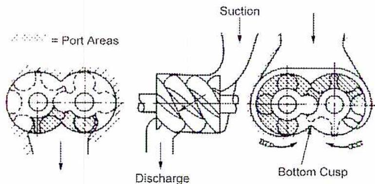
Figure 18
Cross-section of a Screw Compressor
(Courtesy of ASHRAE Handbook)
The compression ratio is determined by the ratio of the volume of the cavity at the discharge end to the volume of the cavity at the suction end. Capacity can be controlled by a sliding valve mechanism that alters the volume of the suction port or by controlling the speed of the rotor using a variable speed drive.
Screw compressors are normally lubricated by oil injection, which requires an oil separator to remove oil from the high-pressure refrigerant. An oil cooler and filter are needed before the oil is re-injected into the screw compressor.
An example of this layout is shown in Fig. 19.
![Schematic diagram of a typical oil system for a screw compressor. The diagram shows a closed-loop oil circulation system. At the top, a screw compressor unit is connected to a 'Load Unload Control Valves' assembly. Oil is drawn from the 'Oil Separator / Sump' (a large horizontal tank) through an 'Oil Pump and Relief' valve. The oil then passes through an 'Oil Cooler', which is equipped with a 'Water Valve' for cooling. The oil then flows through an 'Oil Filter' and back into the 'Load Unload Control Valves' assembly. Arrows indicate the direction of oil flow throughout the system.](c35212e2ffef321207c18ea3ce6d5c09_img.jpg)
Figure 19
Typical Oil System for a Screw Compressor
(Courtesy of ASHRAE Handbook)
Objective 8
Describe the design and operation of evaporators, condensers, receivers, scale traps and dehydrators.
EVAPORATORS
The evaporator is the heat exchanger where cooling occurs. The cooling may be direct in which the evaporator is placed inside the room or container that needs to be cooled. It may also be indirect, in which case it cools a fluid that is circulated to the location that needs to be cooled. There are two principal types of evaporators:
- • Dry expansion
- • Flooded
Dry Expansion Evaporators
In this type, illustrated in Fig. 20, the ammonia is evaporated from a liquid into a gas in banks of pipe coils. The refrigerant is entirely evaporated at the exit of the coils. Fig. 20 shows a coil placed directly in a cooling room.
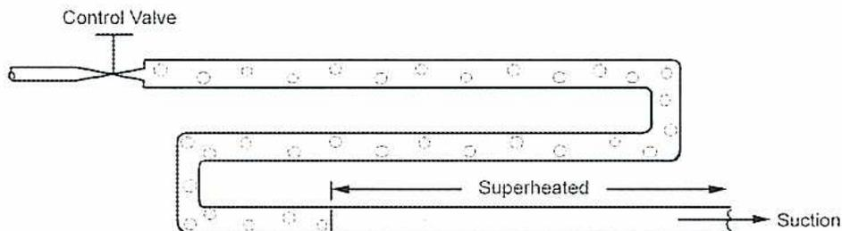
Figure 20
Direct Cooling Dry Expansion Evaporator
Flooded Evaporators
The disadvantage of the dry evaporator is that its surfaces are not constantly wetted by the boiling refrigerant. This has led to the development of the flooded type evaporator, shown in Fig. 21 and also in Fig. 7, in which some form of tank or header, called an accumulator, keeps the inside of the evaporator surface flooded with liquid. While this requires a greater initial charge of liquid refrigerant, the higher heat transfer rate per area of evaporator surface is a decided advantage.
If properly constructed, the flooded evaporator eliminates any chance of liquid returning to and damaging the compressor.
In Fig.21, the flooded system is adapted to a brine cooler. A ball float liquid level controller, similar to those used on heating boilers, keeps a constant level inside the shell.
The flooded system is self-regulating since there is a fairly constant liquid level at all loads. The vapour space above this level eliminates the possibility of slugs of liquid returning to the compressor.
Providing that the accumulator is large enough to prevent surging and accompanying slopover of liquid into the suction line, the only limiting element is the size of the compressor. Thus, the flooded system has the advantage of higher capacity over the dry system.
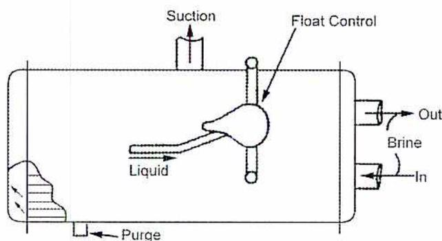
Figure 21
Flooded Brine Cooler
CONDENSERS
The function of the condenser is to cool the hot high-pressure gas received from the compressor to a temperature at which it condenses into liquid. Types of condensers in use include:
- • Double-Pipe Condensers
- • Evaporative (Atmospheric) Condensers
- • Shell-and-Tube Condensers
Double-Pipe Condensers
The double-pipe condenser (Fig. 22) consists of two pipes, one inside the other, placed in vertical rows. The cooling water circulates inside the smaller pipe, and the ammonia circulates in the annular space between the inner and outer pipes. The ammonia gas enters at the top, and the liquid is drawn off at the bottom. The gas and the cooling water travel in opposite directions so that the coldest water is in contact with the cool liquid ammonia, and the hottest water is in contact with the hot gas.
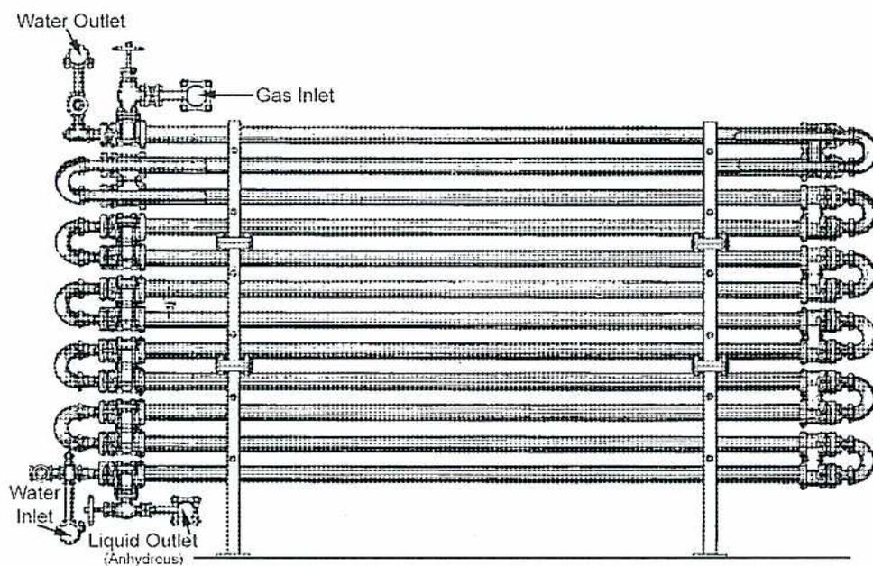
A schematic diagram of a double pipe condenser. It consists of a series of horizontal pipes arranged in a stack. On the left side, there is a 'Water Inlet' at the bottom and a 'Water Outlet' at the top, connected by a series of pipes and valves. On the right side, there is a 'Gas Inlet' at the top and a 'Liquid Outlet (Anhydrous)' at the bottom, also connected by pipes and valves. The central part of the diagram shows multiple horizontal pipes with U-shaped bends at both ends, indicating a double-pipe configuration.
Figure 22
Double Pipe Condenser
Evaporative (Atmospheric) Condensers
In the simplest evaporative condenser, shown in Fig. 23, water trickles over the coils and drains away to waste or to be cooled and used again where water is scarce. Since the water flows from top to bottom, counter-current principle is achieved as the hot gas enters at the bottom.
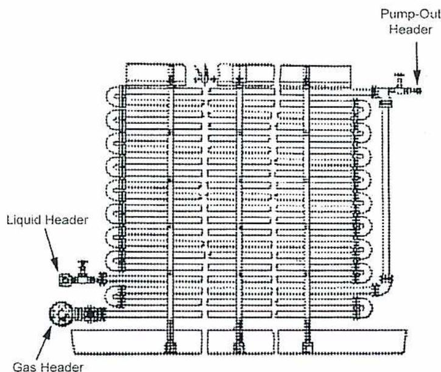
A schematic diagram of an atmospheric evaporative condenser. It features a large vertical coil assembly. At the bottom, there is a 'Gas Header' with an inlet pipe. At the top, there is a 'Liquid Header' with an inlet pipe. On the right side, a 'Pump-Out Header' is shown at the top, with an arrow pointing downwards, indicating the flow of water. The diagram shows multiple horizontal coils within a vertical frame, with water distribution pipes at the top and a collection area at the bottom.
Figure 23
Atmospheric Evaporative Condenser
A modern type of evaporative condenser is shown in Fig. 24. Water is continuously re-circulated and sprayed over the coils by a self-contained pump. Air is rapidly drawn over the wetted coils by a blower, increasing the effectiveness of evaporation.
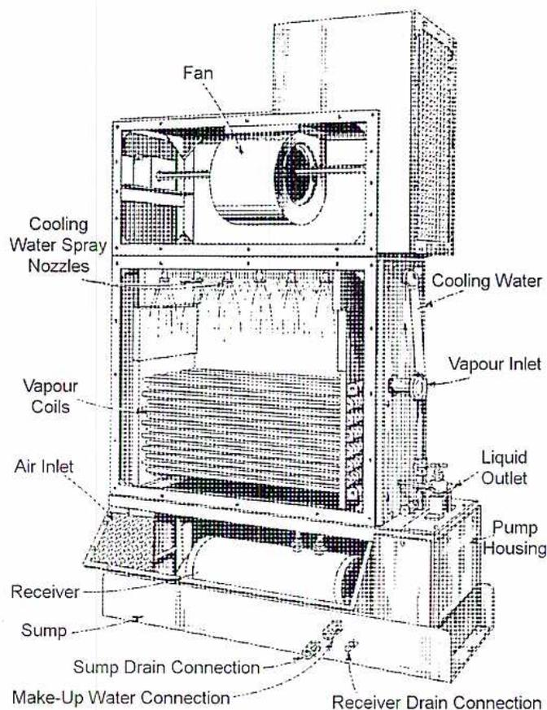
The diagram illustrates the internal structure of an evaporative condenser. At the top, a 'Fan' is mounted. Below it, 'Cooling Water Spray Nozzles' are positioned to spray water over a stack of 'Vapour Coils'. An 'Air Inlet' is located at the bottom left. On the right side, there is a 'Cooling Water' inlet, a 'Vapour Inlet', and a 'Liquid Outlet'. At the base, a 'Receiver' and a 'Sump' are shown, with a 'Pump Housing' to the right. Connections at the bottom include a 'Sump Drain Connection', a 'Make-Up Water Connection', and a 'Receiver Drain Connection'.
Figure 24
Evaporative Condenser
Water loss due to evaporation must be compensated for by makeup water which adds to the dissolved solids. These must be blown-down periodically to keep them within limits in order to prevent deposits of solids over the coils.
Shell-and-Tube Condensers
The shell-and-tube condenser (Fig. 25) consists of an outer shell containing a number of tubes expanded into headers at each end. It is uses a two-pass design; the water flows through the tubes, and the refrigerant condenses outside the tubes.
This is the most common type, being quite efficient and compact. It is made in a wide variety of sizes, and units may be stacked one above the other in multiples to increase capacity. Vertical units are also made, usually having gravity water-flow down the tubes.
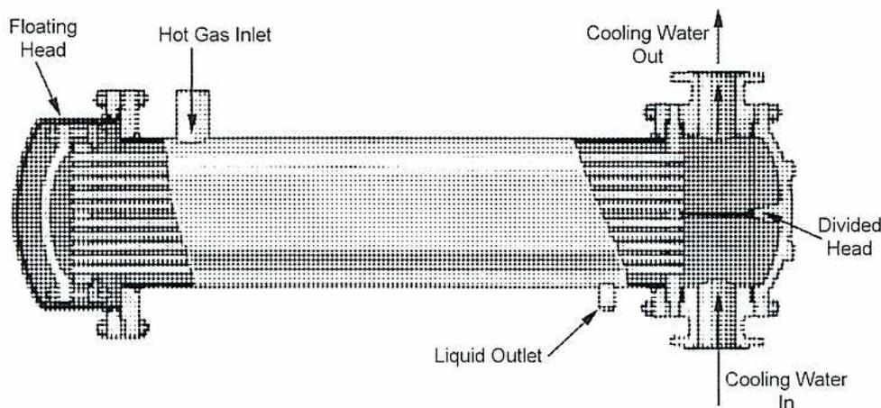
Figure 25
Shell-and-Tube Condenser
LIQUID RECEIVERS
A liquid receiver is a collecting tank which acts as a storage point for liquid refrigerant flowing from the condenser (Figs. 7 and 8). It is large enough to contain the whole system refrigerant content. When using ammonia, it is normally equipped with an oil drain to lead off any lubricant residue in the liquid refrigerant. This is possible because liquid ammonia is lighter than oil to some extent; therefore, the receiver acts as an additional oil separator.
SCALE TRAPS
The scale trap, or separator, shown in Fig. 26, intercepts solid particles such as rust and pipe scale, which may have been freed from the inner walls of the evaporator coils. This prevents the scale particles from entering the compressor suction where they would seriously damage the valves. It is placed in the suction line between the evaporator and compressor, as close as possible to the compressor. The scale trap is an integral part of the compressor manifold piping, and it may be provided with an oil drain line for removing any oil which finds its way through the evaporator.
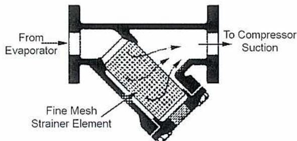
Figure 26
Scale Trap
Suction vapour flowing through the trap must pass through the fine mesh strainer. Any solid material is prevented from going on to the compressor suction. All traps are constructed so that removing deposits and cleaning the strainer is easily performed. Although some traps have an oil-drain line, their primary function is to remove solids from the refrigerant.
DEHYDRATORS
Devices to dehydrate, or dry, the refrigerant are very beneficial since, depending upon the refrigerant, and particularly in the case of Freon, small quantities of entrained water may freeze in the regulator and impair its operation. Moisture may also be a primary cause of corrosion and copper plating.
As shown in Fig. 27, a dehydrator is a metal shell containing a desiccant to remove water either by absorption or by chemical combination. The shell is fitted with inlet and outlet connections so that it can be inserted in the liquid or suction line as required. The desiccant is prevented from being carried out of the shell by mesh strainers and filter pads.
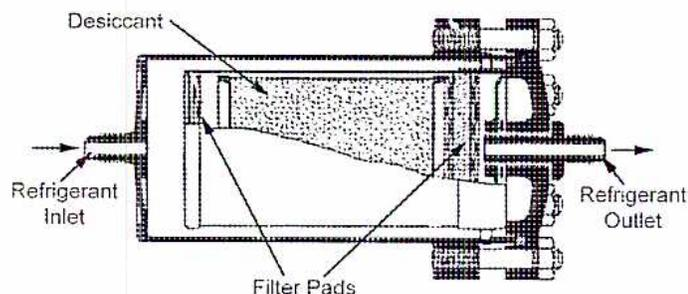
A cross-sectional diagram of a dehydrator unit. It shows a cylindrical metal shell with a 'Refrigerant Inlet' on the left and a 'Refrigerant Outlet' on the right. Inside the shell, there is a large central area filled with granular material labeled 'Desiccant' and two vertical barriers at the ends labeled 'Filter Pads'. Arrows indicate the flow of refrigerant from the inlet, through the filter pads and desiccant, and out through the outlet. The right side of the shell features a bolted flange assembly.
Figure 27
Dehydrator
Objective 9
Describe the design and operation of absorbers.
ABSORBERS
The shell-and-tube absorber, Fig. 28(a), is constructed in the form of a cylindrical shell containing cooling water coils. In this type of absorber, the weak aqua enters by a float-controlled regulator which maintains a constant level. The aqua leaves the regulator and enters a distributor pipe on top, then enters the shell through sprinkler heads. The anhydrous ammonia vapour coming from the evaporator enters at the bottom and is distributed by the perforated plate shown. A gauge glass is attached to show the aqua level in the absorber.
Fig. 28(b) illustrates a double-pipe absorber that is connected to a float regulator in a similar manner to the shell-and-tube type.
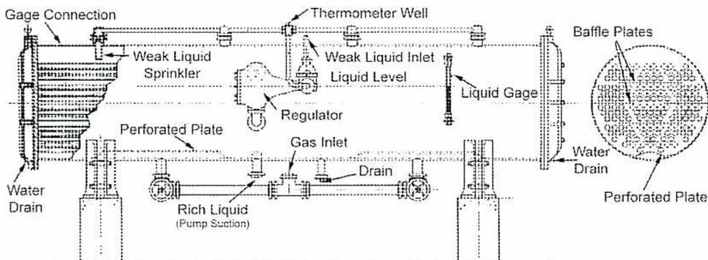
The diagram illustrates the internal components and piping of a shell-and-tube absorber. On the left, a vertical 'Gage Connection' is shown. The top of the shell features a 'Weak Liquid Sprinkler' and a 'Thermometer Well'. A 'Regulator' is connected to the 'Weak Liquid Inlet', which is linked to a 'Liquid Level' indicator and a 'Liquid Gage'. The 'Gas Inlet' is located at the bottom center, leading to a 'Perforated Plate'. Below this plate is the 'Rich Liquid (Pump Section)' and a 'Drain'. 'Water Drain' pipes are shown at the bottom left and bottom right. A circular inset on the right provides a cross-sectional view of the shell's interior, showing 'Baffle Plates' and another 'Perforated Plate'.
(a)
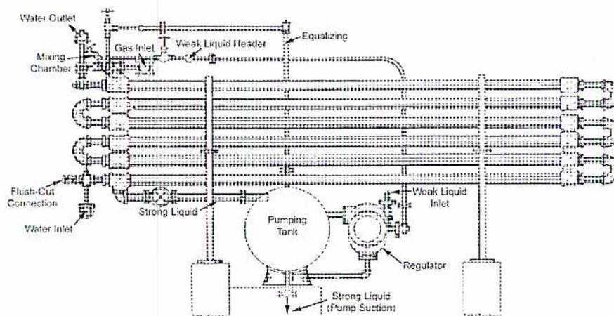
The diagram illustrates a complex absorption system. At the top left, a 'Water Outlet' and 'Gas Inlet' lead into a 'Mixing Chamber'. From this chamber, a 'Weak Liquid Header' extends to the right, connected by an 'Equalizing' line. Below the header, a series of horizontal pipes, each with a U-shaped bend, represent the absorption coils. On the left side, a 'Flush-Out Connection' and 'Water Inlet' are shown. A 'Strong Liquid' line runs from the bottom of the coils to a circular 'Pumping Tank'. From the tank, a 'Strong Liquid (Pump Suction)' line extends downwards. To the right of the tank, a 'Regulator' is connected to a 'Weak Liquid Inlet' line that feeds into the coils.
(b)
Figure 28
Types of Absorbers
Objective 10
Describe the design and operation of valves and fittings.
AMMONIA VALVES
Valves for ammonia service are usually of special construction, either globe or angle, with soft metal renewable seats. The common form of valve has a collar on the spindle which makes a tight seat under the stuffing box when the valve is opened wide, thus preventing leakage and enabling the valve to be repacked under pressure. The weights of valves and fittings are similar to those listed for extra heavy steam. The materials used are cast steel, malleable cast, and drop-forged steel.
The regulating valve is a special type with a small opening and a fine threaded stem. Fig. 29 shows a regulating valve with a soft metal seat ring and a non-rising stem. This valve is made of iron with the exception of the soft metal seat and the stem which is made of cold-rolled steel.
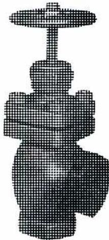
Figure 29
Screwed Regulating Valve for Ammonia
The ammonia receiver is fitted with a gauge glass (Fig. 30) to indicate the liquid level in the vessel. This gauge glass fitting needs to be of the safety type so that, in the event of breakage of the glass, the connection seals itself to prevent the escape of refrigerant.
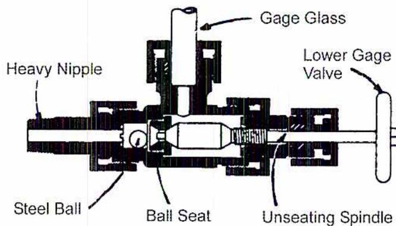
Figure 30
Safety Type Gauge Glass Fitting
Ammonia Fittings
The nature of ammonia makes it more difficult to make and keep joints leak proof than for other mediums such as water and steam, even if pressures do not as a rule exceed 1400 kPa. The tendency is to eliminate pipe fittings as far as possible by using oxy-acetylene and electric welding, both in shop construction and in the erection. Pipe work can be almost entirely welded except for a few unions and the necessary valves. Even double-pipe condensers have been made by welding throughout. The use of welding will eventually supersede fittings almost entirely.
Flanged joints for use with ammonia are usually of the tongue and groove type shown in Fig. 31 with a rubber or soft lead gasket. The tongue and groove prevents the blowing out of the gasket, which could happen if the ordinary flat-faced type of flanges were used.
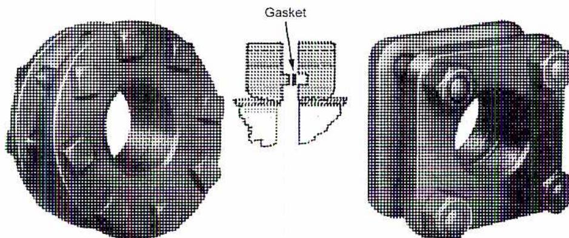
Figure 31
Tongue and Groove Flanges for Ammonia
Screwed fittings are made up in two ways:
- • Using a mixture of litharge and glycerine on the threads
- • Heat the pipe and fittings to the temperature of the solder
Fittings may also be of the welded flange type. Return bends, used in pipe coil construction, are shown in Fig. 22. These are threaded, but fittings for welding or hand soldering are also available.
Freon Pipe and Fittings
Fig. 32 shows a flanged globe valve of back-seating construction. Since loss of Freon is harder to detect than loss of ammonia, the valve is fitted with a seal cap to prevent leakage. The valve for ammonia service is fitted with a standard packing gland nut and a handwheel.
![A detailed cross-sectional diagram of a flanged globe valve for Freon. The diagram shows the internal components of the valve, including the valve stem, valve button, valve bonnet, and valve body. Labels on the left side point to the Valve Stem Follower, Valve Stem Packing Gland, Valve Stem Ring, Valve Bonnet, Valve Button, and Valve Body. Labels on the right side point to the Valve Seal Cap, Valve Stem, Valve Seal Cap Gasket, Valve Stem Packing, Valve Bonnet Gasket, and Valve Button Locknut. The valve is shown in a closed position, with the valve button seated against the valve seat.](0cc86fe8fc37b0edc9581f2af9459a52_img.jpg)
Figure 32
Flanged Globe Valve for Freon
Since Freon (halides) has no harmful effect on brass and copper, these metals are almost universally used for Freon pipes and fittings under 51 mm diameter. Joints may be soft-soldered, though occasionally hard solder is used. Hard-drawn copper tubing is easy to handle, has a smooth interior surface, and smooth bends are easily made by annealing sections of the tube.
Since the Freon carries some lubricating oil through the system, special precautions must be taken to ensure that the oil eventually finds its way back to the crankcase. Hot gas lines are designed to provide certain minimum velocities. Manufacturer's recommendations should always be followed.
Carbon Dioxide Valves and Fittings
There is no particular standard for carbon dioxide valves and fittings, nor do they differ in principle or construction from the fittings used for other purposes, but they are much heavier than ammonia fittings as they have to withstand much higher pressures.
Any material can be used, provided it has sufficient strength, as carbon dioxide has no corrosive effects on any metals. For the same reason, any suitable material can be used for jointing. Hard fibre, copper, and aluminum are the most common gasket materials. Fittings and valves are usually drop forged using flanged construction with a copper-ring gasket.
- 1. State six properties of an ideal refrigerant.
-
2. a) List the four basic components of a closed vapour compression refrigeration system.
b) Use a simple diagram to show the relative pressures and temperatures between each component. - 3. Explain the difference between direct and indirect cooling.
- 4. What two factors does the ammonia absorption system depend on?
- 5. With the aid of a simple sketch, describe a cascade system.
- 6. Explain what a hermetic system is and why it is used.
- 7. With the aid of a simple sketch, describe a rotary screw compressor.
- 8. Explain what evaporators are used for and describe the two types of evaporators.
- 9. List the three types of condensers and briefly describe them.